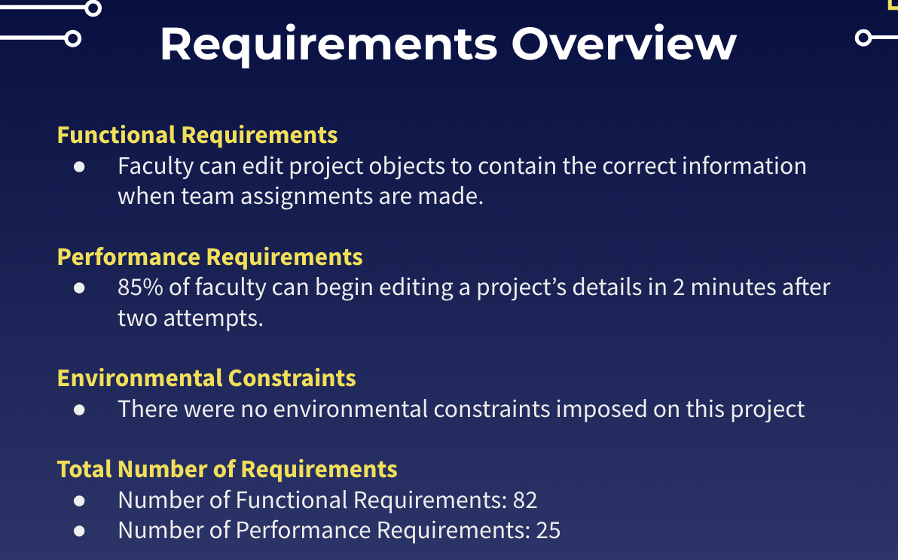

Requirements
For the web application, functional and performance requirements, as well as environmental constraints have been identified through the process of requirements acquisition. This process entailed weekly meetings with the client and as a team, which resulted in the culmination of the requirements detailed below. Fleshing out these requirements will help the team implement this product in the future.
Functional Requirements
In software engineering and systems engineering, a functional requirement defines a function of a system or its component, where a function is described as a specification of behavior between inputs and outputs.
Performance Requirements
Performance requirements define how well the software system accomplishes certain functions under specific conditions. Examples include the software's speed of response, throughput, execution time and storage capacity.
Environmental Requirements
Environmental requirements limits the effect that external environment (natural or induced) is to have on the system, and/or the effect that the system is to have on the external enveloping environment.